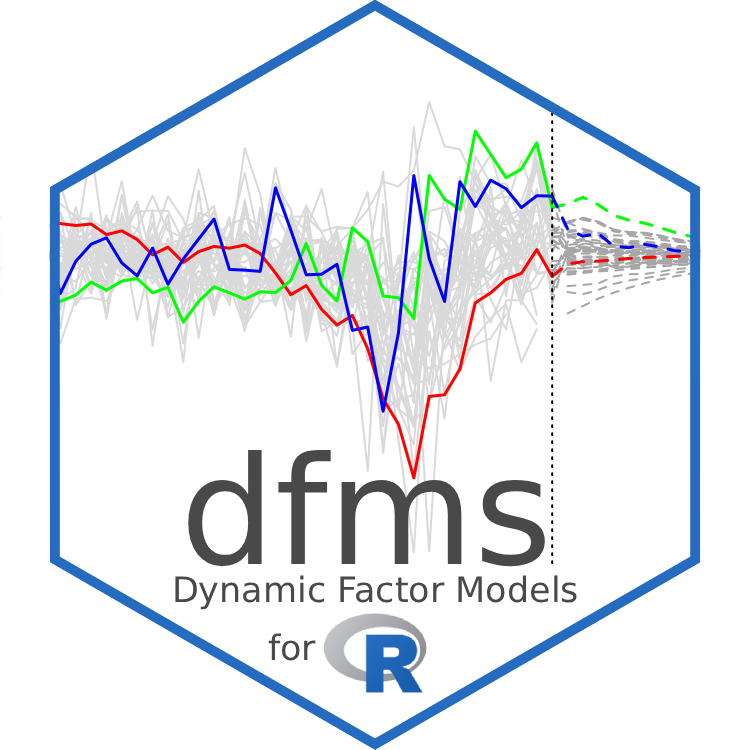

I am very happy to announce the release of dfms version 1.0 (and 0.4.0 just a week earlier, see news), implementing major features such as support for dynamic factor models (DFMs) with autoregressive errors, mixed-frequency (monthly-quarterly) DFMs, including with autoregressive errors, and decomposition of forecast revisions into news releases (updates to time series) following Banbura and Modugno (2014)—supporting interpretable nowcasts for one or multiple monthly or quarterly targets. This completes the planned scope of the package: the full, computationally efficient, and easily accessible implementation of the methodology of Banbura and Modugno (2014) in R.
Together with this major release, dfms has now been successfully peer-reviewed by two academic reviewers through the rOpenSci Software Peer Review, and was published by rOpenSci—the repo now lives at github.com/ropensci/dfms and the website at docs.ropensci.org/dfms (redirects are in place).
dfms 1.0 thus provides a feature-rich, easy-to-use, computationally efficient (C++ powered), and verified toolset to estimate and work with DFMs in R. It also seamlessly integrates with the R language and its common methods and design patterns for statistical packages. It is well documented via a theoretical and practical vignette and detailed function documentation, and thus offers an excellent entry point for young researchers and practitioners interested in DFMs and nowcasting. I therefore hope that its uptake within the scientific and R communities will increase.
The release also marks a major milestone for a package that was first put on CRAN in October 2022 to estimate a simple, single frequency DFM—especially given that I don’t sit in a Central Bank or do macro/business cycle analysis for a living. I also never had a natural fascination for Kalman Filters. Rather, a series of professional coincidences over the course of 5 years eventually culminated in this package. I thus want to briefly reflect on the history of dfms before I demonstrate its new features.
The Story of dfms: From Simple Beginnings to Fully-Featured DFM Package
As an economist training in macroeconomics, trade, and development, I got to know about DFMs almost by accident during my Master’s in Geneva at a summer school on “Big Data in Macroeconomics and Finance” at the Kiel Institute for the World Economy in 2018—which also marks my first encounter with the Kiel Institute where I ended up doing my PhD. The course covered a variety of topics via external lecturers: household finance, social networks, geospatial big data, text mining, and also a day of “Nowcasting” with Michele Modugno from the Federal Reserve Board—where he presented his mixed-frequency DFM methodology that dfms now efficiently implements in R and C++. I didn’t understand much of it back then and was more interested in the other topics, but I had gotten the gist of it.
Following my Master’s, I was posted to Uganda as an ODI Fellow on a 2-year assignment (2020/21) in the Macroeconomic Policy Department of Uganda’s Ministry of Finance, Planning, and Economic Development (MoFPED). Most of my work involved financial programming, data science, and other kinds of econometric and CGE analysis. In spring 2021, I was, however, working part-time on a research paper on Macroeconomic Dynamics and the Effects of Fiscal Spending in Uganda. Its aim was to assess the dynamic impact of fiscal spending on the Ugandan economy and answer a few critical questions that kept coming up, such as are we crowding out credit to the private sector? What happens to interest/tbill rates when we spend more? and what is the economic/growth impact of our spending? Annual time series in Uganda are relatively short, but we observed fiscal spending and a few other key indicators on a monthly basis. Putting together a monthly estimation dataset was thus key for meaningful dynamic modelling.
The main monthly indicator of economic activity in Uganda with some history is the Composite Index of Economic Activity (CIEA) published by the Bank of Uganda. It combines 10 monthly series: real currency in circulation, real VAT on domestic goods, real exports of goods and services, real imports, real government expenditure, real sales of selected companies, real cement production, real excise taxes, real PAYE and real private sector credit. They are combined by first using the Henderson Moving Average procedure for seasonal adjustment and separation of irregular components, and aggregation of the trend-cycle series into a composite trend-cycle indicator using weights derived from PCA and correlations of series with quarterly GDP.
And that is where my problem was—the inclusion of real government expenditure in this index defeated my purposes of using it to assess fiscal spending impacts. I thus needed an index without it, and I also thought the removal of irregular components and complicated aggregation procedure was suboptimal for research purposes. I wanted a simple, transparent procedure to obtain a monthly indicator of economic activity for Uganda, and a basic DFM with a single factor seemed the appropriate
\[\textbf{x}_t = \textbf{c} f_t + \textbf{e}_t \ \sim\ N(\textbf{0}, \textbf{R})\] \[f_t = \sum_{j=1}^p a_j f_{t-j} + u_t \ \sim\ N(0, q)\]
methodology—with observation weights c and transition coefficients \(a_j\) to be jointly estimated.
So I looked for a simple implementation of DFMs and found, on GitHub, the R package dynfactoR by Rtys Bagduzinas that estimated single-frequency DFMs with the EM/QML algorithm following Doz, Giannone, and Reichlin (2012), and also produced PCA and 2-step estimates following Doz, Giannone, and Reichlin (2011). It used a Julia backend for some of the filters, thus I forked it and made some changes—rewriting the Kalman Filter and Smoother and some parts of the EM algorithm in Armadillo C++, and linking through Rcpp. The package served the purposes of my paper well, and I had thought of creating something more organized and releasing it to CRAN, but didn’t follow through at that point (2021) as I was wrapping up my assignment in Uganda.
I returned to dynfactoR a year later in the early stages of my PhD—still working on empirical macroeconomics in Africa—and managed to refactor the package and put a first version on CRAN. For this refactor, I took much inspiration from the excellent vars package to estimate (S)VAR and (S)VEC models in R, which provides a compelling nomenclature with main function VAR() and tight observance of the object-oriented conventions for statistical R packages—including print(), plot(), coef(), summary(), residuals(), fitted(), predict(), and logLik() methods for the varest objects returned by VAR(), and various other methods, e.g., print() and plot() for the varprd objects returned by predict(). It also provides information criteria to select the VAR lag order via VARselect(). Furthermore, its function documentation includes mathematical formulations alongside brief explanations, which I liked a lot. I thus got inspired and called the package dfms, with main function DFM(), implemented information criteria to select the number of factors r following Bai and Ng (2002) in ICr(), including a screeplot() method following Onatski (2010),1 and a comprehensive set of methods like vars. I also exported the C++ Kalman Filter and Smoother—which to my knowledge is still the most efficient implementation in R—alongside the function tsnarmimp() to impute time series matrices using cubic splines and moving averages (needed internally to obtain initial PCA-based system matrices to initialize the Kalman Filter), and Armadillo’s inverse and pseudo-inverse functions which I found somewhat more robust than R’s native ones. dfms version 0.1.3, including these features, hit CRAN in October 2022, and I introduced it with a brief blog post. I also submitted it for the rOpenSci Software Peer Review as I thought that might increase its quality.
It then occurred, one year into the PhD, that I was getting a bit bored in Kiel during the winter of 2022/23, and, through connections, organized myself a 3-month research visit at Stellenbosch University in South Africa—from February-April 2023. Parts of the department were very interested in nowcasting the South African economy. They had attempted it with regression and ML-based approaches, but, given my dfms package on CRAN, they asked me to work on an interpretable DFM-based methodology. This interest in nowcasting was warranted as, in the spring of 2023, the South African energy crisis was at its peak, with the implementation of load-shedding level 6—which meant about 8 hours per day on generators—inducing justified fears that it would stifle the South African economy.
Thus, I set out to implement a mixed-frequency DFM to nowcast the South African economy, particularly real GDP and unemployment. The first step, which took up much of my time, was to assemble and automate a database of high quality macroeconomic indicators. I ended up creating the South Africa Macroeconomic Database (SAMADB)—an open relational database with ~10,000 macroeconomic time series obtained from the South African Reserve Bank (SARB) and Statistics South Africa (STATSSA) and updated on a weekly basis via EconData and automated scraping of the SARB and STATSSA websites. I hosted it on servers at Codera Analytics, implemented the updating through GitHub Actions, and created the samadb R package for easy access. As of January 2026, the weekly updates still run, and the R package enjoys almost 15,000 downloads per month. I also wrote Python and Julia packages as these languages were more popular in the department.
With the database in place, I took a deep-dive on DFMs for nowcasting applications, revisiting the workshop materials by Michele Modugno, carefully reading Banbura and Modugno (2014), and looking at various nowcasting codes. The theoretical vignette, published in March 2023, is a result of this deep-dive and was principally written to assist my own understanding. I started implementing some of the features described there, and also received the rOpenSci software reviews during this time, which helped me improve the package. I released dfms 0.2.0, adding autoregressive errors and various smaller improvements, to CRAN at the end of March 2023. I mention in the news for that release that “I plan to implement all features described in this vignette until summer 2023”, but that turned out to be highly optimistic. With one month to go in my research visit, it dawned on me that I wouldn’t be able to complete dfms and build a nowcasting model in good time.
Thus, I switched to Python, where Chad Fulton had done some excellent work implementing the DynamicFactorMQ class for mixed-frequency nowcasting in statsmodels alongside a comprehensive tutorial. Following selection of a set of indicators for nowcasting, integration with the database and running the model on a weekly basis—also implemented through GitHub Actions—went quite smoothly. I presented the database, model, and model evaluation results at the Bureau of Economic Research seminar in Stellenbosch on April 20. It was a great success, with additional staff from the Reserve Bank, Treasury, and Statistics South Africa joining online.
Afterwards, and as announced in the slides, I devoted the rest of my time and also some time in April/May to the development of a NY-Fed-style Nowcasting Dashboard hosted through Codera Analytics at nowcast.codera.co.za and published in May 2023. Built with Dash and Plotly in Python, it provides interactive visualizations of the nowcast evolution and the data releases driving it, as well as historical nowcasting performance and release impacts by sector. This South Africa Nowcasting Model ran until November 2024, when it broke down due to the unavailability of some time series. So that is also a warning right there—if you are building a nowcasting platform using dfms or other tools, make sure you have a robust data pipeline in place and only include series that will remain available for years.
With the nowcasting platform in place, and the initial software reviews completed, there was not much urgency to work more on dfms. I had shifted my research interests to infrastructure and value chains in Africa, and was busy with other projects. rOpenSci editors kept pinging me in 2024 for the resubmit, but I was wrapping up my PhD, and also still had the ambition to implement mixed-frequency features. This state dragged on for a while after the PhD defense (Nov’24) as I was consulting, job-searching, and doing other things, but I managed, in May 2025, to push out dfms 0.3.0 with the mixed-frequency DFM implementation and resubmitted it to rOpenSci. The reviewers approved, and, given that it was to be published through rOpenSci in January 2026, I forced myself to complete the scope of the package. I thus spent two intense weekends and pushed out dfms 0.4.0, adding support for mixed-frequency estimation with autoregressive errors, on January 18, followed by this monumental 1.0.0 release, including the news decomposition following Banbura and Modugno (2014), full-state predictions, a package logo and updated practical vignette, on January 26. The package was then published through rOpenSci, which means the repo moved to rOpenSci GitHub and its docs are served from docs.ropensci.org.
{kind=link}
The final push was greatly facilitated by the availability of modern AI, in particular Cursor and the Opus 4.5 and GPT 5.2 Codex models, which could take into context Banbura and Modugno (2014)’s original Matlab code and their paper + appendix, and help make and execute detailed implementation plans. I tested these by translating the Matlab code to Julia and testing it against R—using the Cursor debugger to hunt down complicated bugs.
This thus concludes the story of dfms—from simple single-frequency package to a full-blown DFM/nowcasting library in four years. Apart from some differences in design choices, Kalman Filter initialization, and reporting, the package produces identical results to Banbura and Modugno (2014)’s research codes.
The literature on DFMs has, of course, moved on—with regime switching/time-varying volatility/parameter Bayesian DFMs now the state of the art.2 Since the state of the art is complicated and computationally intense though, and the methodology of Banbura and Modugno (2014) works very well when shocks are moderate—we also tested the DFM against various ML/DL based approaches on US data, including the COVID shock, and found that it outperformed most ML/DL methods—I believe dfms 1.0+ can serve the community well, and I hope that it will find use in academia and policy institutions.
New dfms Features: Mixed Frequency DFMs with Autoregressive Errors, Full-State Predictions, and Multi-Target News Decomposition
The two latest dfms updates principally introduce three new features: (1) mixed-frequency estimation with autoregressive errors implemented in dfms 0.4.0; (2) decomposition of forecast revisions into news contributions following Banbura and Modugno (2014), and (3) full-state predictions and forecasts implemented in dfms 1.0.0.
To stick with the context of its history, and since the documentation and vignette provide lots of examples using the included dataset of Banbura and Modugno (2014), I will re-estimate my South Africa nowcasting model with the last available vintages for end-November and early-December 2024.
library(fastverse)
## -- Attaching packages ------------------------------------------------------------------------------- fastverse 0.3.4 --
## v data.table 1.17.0 v kit 0.0.21
## v magrittr 2.0.4 v collapse 2.1.6
fastverse_extend(xts, dfms, readxl)
## -- Attaching extension packages --------------------------------------------------------------------- fastverse 0.3.4 --
## v xts 0.14.1 v readxl 1.4.5
## v dfms 1.0.0
## -- Conflicts ---------------------------------------------------------------------------------- fastverse_conflicts() --
## x xts::first() masks data.table::first()
## x xts::last() masks data.table::last()
## x dfms::news() masks utils::news()
# Get Last November 2024 Vintage
download.file("https://github.com/coderaanalytics-models/SA-Nowcast/raw/refs/heads/main/vintages/econdata_nowcast_data_22_11_2024.xlsx",
destfile = "econdata_nowcast_data_22_11_2024.xlsx", mode = "wb")
data_m <- read_xlsx("econdata_nowcast_data_22_11_2024.xlsx",
sheet = "data_logdiff_m") |> qDT() |> as.xts()
ncol(data_m)
## [1] 54
data_q <- read_xlsx("econdata_nowcast_data_22_11_2024.xlsx",
sheet = "data_logdiff_q") |> qDT() |>
fmutate(date = as.Date(date)) |>
# dfms expects quarterly data to be released on the 3rd month of each quarter
within(lubridate::month(date) <- lubridate::month(date) + 2L) |> as.xts()
colnames(data_q)
## [1] "UNEMP" "GDP" "RGDP"
# The xts data format makes temporal merging and subsetting very easy
data <- merge(data_m, data_q)["1990-02/"]
# .. it also has a nice plot method
plot(scale(data), lwd = 1, ylim = c(-5, 5))
The usual dfms workflow is starts with information criteria to determine the number of factors and the factor-VAR order
(ic <- ICr(data))
## Missing values detected: imputing data with tsnarmimp() with default settings
## Optimal Number of Factors (r) from Bai and Ng (2002) Criteria
##
## IC1 IC2 IC3
## 1 1 20
screeplot(ic)
vars::VARselect(ic$F_pca[, 1:4])
## $selection
## AIC(n) HQ(n) SC(n) FPE(n)
## 7 3 3 7
##
## $criteria
## 1 2 3 4 5 6 7 8 9 10
## AIC(n) 3.372492 2.959518 1.718657 1.667090 1.668591 1.636513 1.606690 1.618062 1.652979 1.673131
## HQ(n) 3.450602 3.100117 1.921743 1.932665 1.996653 2.027064 2.059729 2.133589 2.230994 2.313634
## SC(n) 3.569849 3.314762 2.231786 2.338105 2.497491 2.623300 2.751363 2.920620 3.113423 3.291460
## FPE(n) 29.151229 19.289241 5.577523 5.297771 5.306648 5.140434 4.991144 5.050561 5.233119 5.343569Since the data includes the COVID shock, the first principal component is very dominant, and the information criteria suggest 1 factor. However, since the screeplot drops a bit after the 4th eigenvalue, I opt for four factors, also given that series from the four sectors—real, financial, fiscal, and external—are represented in the dataset. The VAR order is selected as 3 by the HQ and SC criteria. I thus estimate the DFM with 4 factors and VAR(3) dynamics, including autoregressive errors of order 1 and an adjusted state-space form where quarterly variables are represented by unobserved monthly counterparts following Mariano and Murasawa (2003). Importantly for the later news decomposition, setting max.missing = 1 prevents further rows from being dropped from the estimation dataset.3 These two features increase the size of the state-space, and thus computation time, a lot compared to simple estimation (which takes just 2 seconds), but the robust C++ backend still delivers a very respectable computation time of less than one minute for this most complex model case.
system.time(DFM(data, r = 4, p = 3, max.missing = 1))
## Converged after 33 iterations.
## user system elapsed
## 1.357 0.043 1.402
system.time({
dfm <- DFM(data, r = 4, p = 3, idio.ar1 = TRUE, max.missing = 1,
quarterly.vars = colnames(data_q))
})
## Converged after 26 iterations.
## user system elapsed
## 31.693 0.445 32.186
summary(dfm)
## Mixed Frequency Dynamic Factor Model
## n = 57, nm = 54, nq = 3, T = 417, r = 4, p = 3
## %NA = 26.2695, %NAm = 23.8209
## with AR(1) errors: mean(abs(rho)) = 0.296
##
## Call: DFM(X = data, r = 4, p = 3, max.missing = 1, idio.ar1 = TRUE, quarterly.vars = colnames(data_q))
##
## Summary Statistics of Factors [F]
## N Mean Median SD Min Max
## f1 417 0.0358 0.0224 3.1427 -54.3033 25.3044
## f2 417 0.0148 0.0358 1.5887 -19.842 21.7
## f3 417 0.0464 0.0729 1.6763 -25.5152 12.9381
## f4 417 0.0239 0.0049 1.1397 -8.1336 12.0924
##
## Factor Transition Matrix [A]
## L1.f1 L1.f2 L1.f3 L1.f4 L2.f1 L2.f2 L2.f3 L2.f4 L3.f1 L3.f2 L3.f3 L3.f4
## f1 -0.47917 -0.4016 1.49438 0.4893 -0.970167 -0.64590 0.2723 -0.4588 -0.4225 -0.10730 -0.12302 -0.37666
## f2 0.07605 -0.4483 0.05939 0.1679 -0.008145 -0.30928 0.2850 0.1486 0.2977 -0.12425 -0.08882 -0.13348
## f3 0.42230 0.2774 0.02289 0.5551 0.080860 -0.02339 -0.4085 0.1032 0.1769 0.10793 -0.07216 0.10206
## f4 0.16261 0.1108 0.12947 -0.2689 0.005231 0.10899 0.1003 -0.3174 0.2039 -0.02751 -0.12524 -0.07243
##
## Factor Covariance Matrix [cov(F)]
## f1 f2 f3 f4
## f1 9.8763 -0.1549 0.2107 0.2422
## f2 -0.1549 2.5241 0.1329 0.9066*
## f3 0.2107 0.1329 2.8101 0.4524*
## f4 0.2422 0.9066* 0.4524* 1.2990
##
## Factor Transition Error Covariance Matrix [Q]
## u1 u2 u3 u4
## u1 7.6784 0.1027 0.9381 0.7389
## u2 0.1027 0.2946 0.1342 -0.2394
## u3 0.9381 0.1342 0.4943 0.1539
## u4 0.7389 -0.2394 0.1539 0.7417
##
## Summary of Residual AR(1) Serial Correlations
## N Mean Median SD Min Max
## 57 -0.1739 -0.2529 0.2912 -0.6048 0.4128
##
## Summary of Individual R-Squared's
## N Mean Median SD Min Max
## 57 0.5093 0.5816 0.3811 -0.0188 0.9995
plot(dfm, xlim = c(200, 415))
plot(dfm, type = "individual", method = "all")
The factor model is, ostensibly, heavily impacted by the COVID shock, although the extent to which this shock introduced error in the model parameters is not clear. For this demonstration at least, I will not modify the data to deal with the shock. Ostensibly, a significant amount of series still display autoregressive dynamics at mean(abs(rho)) = 0.3, with autoregressive parameters \(\rho\) ranging from -0.6 to 0.41. As further described in the theoretical vignette, the model with autoregressive errors not only estimates these \(\rho\) parameters for each series—saved in dfm$rho—but also the error series \(e_t\) itself—saved in dfm$e—which are modeled as part of the state vector along with the factors. This implies that for these models one can make predictions using either the full state including the modeled residual values or using just the factors. The difference, in this case, is vast, with modeled residuals giving a much better fit to the data.
# Computing residual absolute ratio in percentage terms
rarp <- fmedian(abs(resid(dfm))) / fmedian(abs(resid(dfm, use.full.state = FALSE))) * 100
descr(rarp)
## Dataset: rarp, 1 Variables, N = 57
## ------------------------------------------------------------------------------------------------------------------------
## rarp (numeric):
## Statistics
## N Ndist Mean SD Min Max Skew Kurt
## 57 57 0.04 0.06 0.01 0.3 2.41 8.89
## Quantiles
## 1% 5% 10% 25% 50% 75% 90% 95% 99%
## 0.01 0.01 0.01 0.01 0.02 0.05 0.13 0.16 0.27
## ------------------------------------------------------------------------------------------------------------------------While using the full state (the new default) changes the interpretation of in-sample residuals and fitted values, it generally slightly improves the accuracy of dynamic predictions obtainable with predict().
plot(predict(dfm), xlim = c(400, 428), ylim = c(-2, 2))
Now, the main addition in dfms 1.0, as mentioned, is the news decomposition via news(). For this we first need to load the latest vintage and set it to the same range.
download.file("https://github.com/coderaanalytics-models/SA-Nowcast/raw/refs/heads/main/vintages/econdata_nowcast_data_03_12_2024.xlsx",
destfile = "econdata_nowcast_data_03_12_2024.xlsx", mode = "wb")
data_m_dec <- read_xlsx("econdata_nowcast_data_03_12_2024.xlsx", sheet = "data_logdiff_m") |>
qDT() |> as.xts()
data_q_dec <- read_xlsx("econdata_nowcast_data_03_12_2024.xlsx", sheet = "data_logdiff_q") |>
qDT() |> fmutate(date = as.Date(date)) |> within(lubridate::month(date) <- lubridate::month(date) + 2L) |> as.xts()
data_dec <- merge(data_m_dec, data_q_dec)["1990-02/2024-10"]We could then either estimate a second DFM using this vintage and pass both model objects to news(), or simply pass the new vintage dataset to news() and it will internally estimate a second DFM of the exact same specification. The function supports one or multiple targets and, by default, chooses the last period in the dataset as the nowcasting target period.
news_res <- news(dfm, data_dec, target.vars = colnames(data_q))
## Converged after 26 iterations.
print(news_res) # Multiple targets -> dfm_news_list object
## DFM News (Multiple Targets)
## Target time: 417
## Targets: 3
## Standardized: FALSE
## y_old y_new revision
## UNEMP -0.4463 -3.2878 -2.8415
## GDP 1.5853 2.0275 0.4421
## RGDP 0.0134 0.4465 0.4332
print(news_res$RGDP) # Single target -> dfm_news object
## DFM News
## Target variable: RGDP
## Target time: 417
## Old forecast: 0.0134
## New forecast: 0.4465
## Revision: 0.4332
## Standardized: FALSE
# Target period:
index(data)[417]
## [1] "2024-10-01 UTC"
# Basically this is our prediction of RGDP if it were measured
# across August-October 2024. To do a proper Q4 nowcast
# we would need to extend the dataset by two months. Apart from the forecast revision, the object includes, for each target, a dataframe giving the news for each variable with revisions and its impact on the target forecast revision.
series <- read_xlsx("econdata_nowcast_data_03_12_2024.xlsx", sheet = "series")
news_rgdp <- news_res$RGDP$news_df |> na_omit() |>
join(slt(series, series, label, broad_sector, topic)) |>
colorder(series, label, broad_sector, topic)
## left join: x[series] 40/40 (100%) <1:1st> y[series] 40/57 (70.2%)
news_rgdp |> tfmv(is.numeric, round, 4) |>
fselect(label, topic, actual, forecast, news, gain, impact)
## label topic actual forecast news gain impact
## 1 Consumer Prices Prices -0.0247 0.4317 -0.4564 0.0026 -0.0012
## 2 Final manufactured goods Prices -0.6941 0.1364 -0.8305 0.0349 -0.0290
## 3 Coal and petroleum products Prices -4.0912 -1.3569 -2.7344 0.0072 -0.0198
## 4 Petrol Prices -6.0095 -1.3109 -4.6985 0.0053 -0.0247
## 5 Motor vehicles Prices -0.4008 0.4983 -0.8991 0.0001 -0.0001
## 6 Grand Total Tourism 0.7678 1.7822 -1.0144 0.0001 -0.0001
## 7 Grand Total Tourism 3.6389 -2.6752 6.3140 0.0040 0.0254
## 8 Overnight (tourists) Tourism 2.0994 -9.3852 11.4846 0.0025 0.0287
## 9 Overnight (tourists) Tourism 0.9646 -5.9568 6.9213 0.0001 0.0008
## 10 Total income - Total industry Tourism -0.0664 -7.1929 7.1265 0.0036 0.0254
## 11 Stay units nights sold - Total industry Tourism -0.9814 -6.2616 5.2802 0.0039 0.0208
## 12 Occupancy rate - Total industry Tourism -0.2642 -6.3626 6.0984 0.0040 0.0243
## 13 Leading indicator Other Real 0.9353 -0.3900 1.3253 0.0099 0.0131
## 14 Total: Payload Other Real 1.4904 -0.0783 1.5687 0.0046 0.0072
## 15 Total: Income for freight transportation Other Real -1.2610 -0.4410 -0.8199 0.0060 -0.0049
## 16 Passenger journeys Other Real -6.9646 -2.6520 -4.3126 0.0028 -0.0121
## 17 Income for passenger transportation Other Real -10.1055 -2.3960 -7.7095 0.0053 -0.0410
## 18 M0 Money and Credit -0.3816 -0.2107 -0.1709 0.0121 -0.0021
## 19 Total monetary (M3) deposits Money and Credit 0.3206 0.8764 -0.5558 -0.0281 0.0156
## 20 Claims on the domestic private sector Money and Credit -0.7167 0.8042 -1.5208 -0.0169 0.0257
## 21 Domestic claims on the government sector (nsa) Money and Credit -4.2307 -0.0585 -4.1722 -0.0020 0.0082
## 22 External position - net foreign assets (nsa) Other Fiancial 0.6238 2.7275 -2.1037 -0.0001 0.0002
## 23 Total Other Fiancial 65.1872 2.0438 63.1434 0.0047 0.2972
## 24 Total exports Trade 2.5785 -0.7230 3.3015 0.0338 0.1117
## 25 Total imports Trade -3.7547 0.8862 -4.6409 0.0046 -0.0211
## 26 Official Reserve Assets Reserves -0.9553 0.8221 -1.7774 -0.0003 0.0005
## 27 Foreign currency reserves Reserves -2.2546 0.5593 -2.8139 0.0001 -0.0004
## 28 Cash-flow revenue Cash Flow -3.3586 -0.5585 -2.8000 0.0082 -0.0231
## 29 Cash-flow expenditure Cash Flow -2.4694 1.2563 -3.7258 -0.0005 0.0020
## 30 Cash-flow balance (deficit -/surplus +) Cash Flow -0.4770 -15.9455 15.4685 0.0004 0.0065
## 31 Domestic government bonds Financing 0.5948 0.0164 0.5784 0.0001 0.0000
## 32 Foreign bonds and loans Financing -64.4709 0.0312 -64.5021 -0.0001 0.0090
## 33 Treasury bills and short-term loans Financing -1.6063 12.1153 -13.7216 -0.0003 0.0047
## 34 Change in cash balances Financing 6.3097 -7.1304 13.4401 0.0012 0.0166
## 35 Total net financing Financing 0.0669 5.2526 -5.1856 0.0000 -0.0001
## 36 Total gross loan debt Debt 0.6452 0.9158 -0.2706 0.0142 -0.0038
## 37 Domestic Marketable Debt 0.7577 0.9854 -0.2278 0.0131 -0.0030
## 38 Foreign Debt Debt 0.5219 1.4193 -0.8974 0.0005 -0.0004
## 39 Domestic non-marketable Debt -4.3718 -1.8796 -2.4922 -0.0001 0.0002
## 40 Unemployment rate Other Real -4.2689 -0.0486 -4.2204 0.0024 -0.0101The impact on the target (real GDP in this case) is the news (actual - forecast) times the gain (series weight). These impacts sum to (or their sum closely approximates), the difference between the nowcasts. Naturally, they can also be summed across sectors or other groups of series to provide a more interpretable nowcast news decomposition.
with(news_res$RGDP, (y_new - y_old) / sum(news_df$impact))
## RGDP
## 0.9696488
news_rgdp |>
collap(impact ~ broad_sector + topic, fsum) |>
fmutate(impact = round(impact, 3)) |>
fsubset(order(-abs(impact)))
## broad_sector topic impact
## 1 Financial Other Fiancial 0.297
## 2 Real Tourism 0.125
## 3 External Trade 0.091
## 4 Real Prices -0.075
## 5 Real Other Real -0.048
## 6 Financial Money and Credit 0.047
## 7 Fiscal Financing 0.030
## 8 Fiscal Cash Flow -0.015
## 9 Fiscal Debt -0.007
## 10 External Reserves 0.000As mentioned, this dataset likely needs further processing to do something about the stark shocks before nowcasting using dfms—issues that more current methodologies attempt to address in more sophisticated ways. Nevertheless, the package now provides a full, efficient, and user-friendly implementation of the Banbura and Modugno (2014) methodology in R—which remains the baseline as far as linear Gaussian factor and nowcasting models are concerned. I thus hope that it will be useful to researchers and practitioners interested in DFMs and nowcasting.
References
Doz, C., Giannone, D., & Reichlin, L. (2011). A two-step estimator for large approximate dynamic factor models based on Kalman filtering. Journal of Econometrics, 164(1), 188-205.
Doz, C., Giannone, D., & Reichlin, L. (2012). A quasi-maximum likelihood approach for large, approximate dynamic factor models. Review of Economics and Statistics, 94(4), 1014-1024.
Banbura, M., & Modugno, M. (2014). Maximum likelihood estimation of factor models on datasets with arbitrary pattern of missing data. Journal of Applied Econometrics, 29(1), 133-160.
Mariano, R. S., & Murasawa, Y. (2003). A new coincident index of business cycles based on monthly and quarterly series. Journal of Applied Econometrics, 18(4), 427-443.
Bai, J., Ng, S. (2002). Determining the Number of Factors in Approximate Factor Models. Econometrica, 70(1), 191-221.
Onatski, A. (2010). Determining the number of factors from empirical distribution of eigenvalues. The Review of Economics and Statistics, 92(4), 1004-1016.
Stock, J. H., & Watson, M. W. (2016). Dynamic Factor Models, Factor-Augmented Vector Autoregressions, and Structural Vector Autoregressions in Macroeconomics. Handbook of Macroeconomics, 2, 415–525.
ICr()returns PCA factor estimates on an imputed dataset usingtsnarmimp()which are used for the information criteria following Bai and Ng (2002), and the eigenvalues can be plotted withscreeplot(). Further,vars::VARselect()can be applied to a suitable number of PCA factor estimates to select the optimal lag order for the DFM.↩︎The NY-Fed Nowcast, which used Banbura and Modugno (2014)’s methodology, was temporarily suspended between September 2021 and September 2023 following the huge COVID-19 shock and only recently reintroduced with these modern DFM extensions. This paper by Antolin-Diaz, Drechsel, and Petrella is also a good reference for current developments.↩︎
By default
DFM()drops rows missing more than 80% of series at the beginning or end of the sample.↩︎